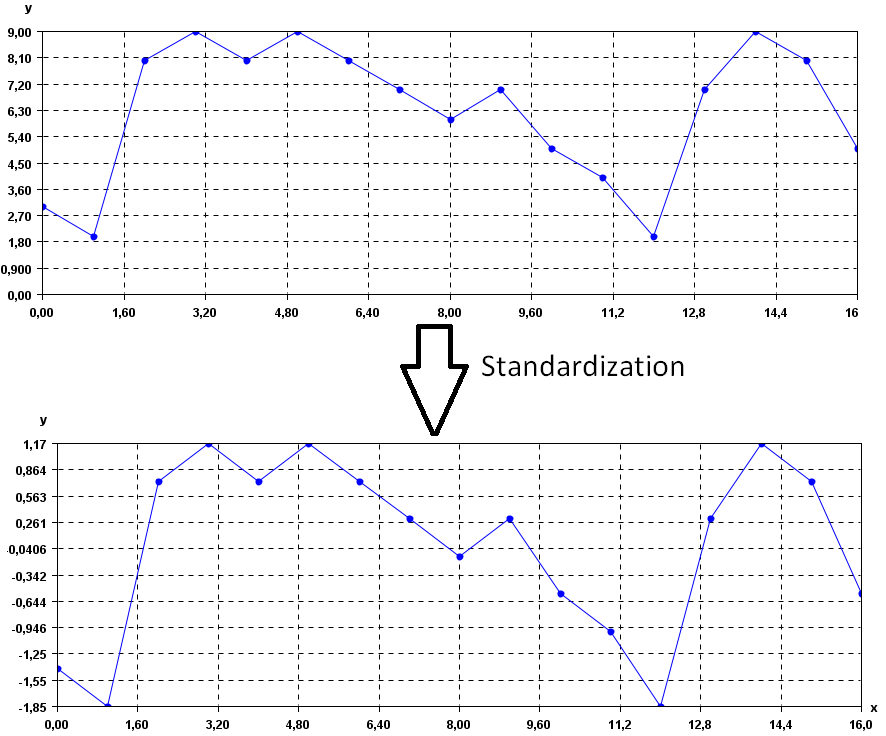

Calculate the standardization of time series (SPMF documentation)
This example explains how to calculate the standardization of time series using the SPMF open-source data mining library.
How to run this example?
- If you are using the graphical interface, (1) choose the "Calculate_standardization_of_time_series" algorithm, (2) select the input file "contextSAX.txt", (3) set the separator to the comma ',' , and then (4) click "Run algorithm".
- If you want to execute this example from the command line,
then execute this command:
java -jar spmf.jar run Calculate_standardization_of_time_series contextSAX.txt output.txt ,
in a folder containing spmf.jar and the example input file contextSAX.txt. - If you are using the source code version of SPMF, to run respectively this example, launch the file "MainTestStandardizationFileToFile.java"in the package ca.pfv.SPMF.tests.
What is the calculation of the standardization of a time series?
Standardization is an operation that is often used to normalize a time series. Let there be a time series (a list of data points). Let V and W be the mean and standard deviation of the values in the time series, respectively. The standardization of a time series is obtained by replacing each data point Z by (Z-V)/ (W). This has for effect or normalizing the time series with respect to the mean and standard deviation. However, note that unlike the min max normalization, standardization does not ensure that data points of the resulting time series are in the [0,1] interval.
What is the input of this algorithm?
The input is one or more time series. A time series is a sequence of floating-point decimal numbers (double values). A time-series can also have a name (a string).
Time series are used in many applications. An example of time series is the price of a stock on the stock market over time. Another example is a sequence of temperature readings collected using sensors.
For this example, consider the following time series:
| Name | Data points |
| ECG1 | 3,2,8,9,8,9,8,7,6,7,5,4,2,7,9,8,5 |
This example time series database is provided in the file contextMovingAverage.txt of the SPMF distribution.
In SPMF, to read a time-series file, it is necessary to indicate the "separator", which is the character used to separate data points in the input file. In this example, the "separator" is the comma ',' symbol.
What is the output?
The output is the standardization of the time series received as input. Let there be a time series (a list of data points). Let V and W be the mean and standard deviation of the values in the time series, respectively. The standardization of a time series is obtained by replacing each data point Z by (Z-V)/ (W).
For example, the result is:
| Name | Data points |
| ECG1_STDDZ | -1.4196563543775027,-1.8506234619563875,0.7351791835169211,1.166146291095806,0.7351791835169211,1.166146291095806,0.7351791835169211,0.3042120759380364,-0.1267550316408484,0.3042120759380364,-0.5577221392197332,-0.988689246798618,-1.8506234619563875,0.3042120759380364,1.166146291095806,0.7351791835169211,-0.5577221392197332 |
To see the result visually, it is possible to use the SPMF time series viewer, described in another example of this documentation. In the following figure, the original time series is displayed (top) and its standardization (bottom).

Input file format
The input file format is defined as follows. It is a text file. The text file contains one or more time series. Each time series is represented by two lines in the input file. The first line contains the string "@NAME=" followed by the name of the time series. The second line is a list of data points, where data points are floating-point decimal numbers separated by a separator character (here the ',' symbol).
For example, the input file of the previous example, named contextMovingAverage.txt is defined as follows:
@FILETYPE="Time series database"
@SOURCE="SPMF SOFTWARE https://philippe-fournier-viger.com/spmf/"
@NAME=ECG2
3,2,8,9,8,9,8,7,6,7,5,4,2,7,9,8,5
The first two lines are metadata indicating the type of file and the source of the data. Then, the following lines are the data. Consider the third and fourth lines. It indicates that the first time series name is "ECG2" and that it consits of the data points: 3,2,8,9,8,9,8,7,6,7,5,4,2,7,9,8, and 5.
But note that it is possible to have more than one time series per file. For example, this is another input file called contextSax.txt, which contains 4 time series.
@FILETYPE="Time series database"
@SOURCE="SPMF SOFTWARE https://philippe-fournier-viger.com/spmf/"
@NAME=ECG1
1,2,3,4,5,6,7,8,9,10
@NAME=ECG2
1.5,2.5,10,9,8,7,6,5
@NAME=ECG3
-1,-2,-3,-4,-5
@NAME=ECG4
-2.0,-3.0,-4.0,-5.0,-6.0
Output file format
The output file format is the same as the input format. For example, there is the result of this example:
@FILETYPE="Time series database"
@SOURCE="SPMF SOFTWARE https://philippe-fournier-viger.com/spmf/"
@NAME=ECG2_STDDZ
-1.4196563543775027,-1.8506234619563875,0.7351791835169211,1.166146291095806,0.7351791835169211,1.166146291095806,0.7351791835169211,0.3042120759380364,-0.1267550316408484,0.3042120759380364,-0.5577221392197332,-0.988689246798618,-1.8506234619563875,0.3042120759380364,1.166146291095806,0.7351791835169211,-0.5577221392197332
Notes
Beside the stantardization, SPMF offers other operations for normalization such as the "min max normalization"
Where can I get more information about the standardization?
The standardization is a basic operation for analyzing time series. It is described in many websites and books.